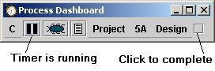

The PSP provides Development scripts for all the levels. To access the development script for this program, we can click the back button on the web browser to take us back to the main Process script which contains a link to the Development script, or we can just press the scripts button again. When the scripts button is pressed, the dashboard always opens the web browser on a form that is appropriate for the current process phase. In this case, it will open to the Development script. We can also use the pull-down control on the scripts button. Pressing the pull-down will bring up a menu of the phases of the project. Picking a phase will open the appropriate script. In this case, picking design will take us to the development script.
While designing program 5A, we will be sure to keep the dashboard's timer running. This can be confirmed by noticing the state of the play/pause button. For more information on the play/pause button, see the play/pause button help topic.
Once finished with the program design, we move on to the coding phase by clicking the completion button again.

Next step: Writing the code
Jump to step:
START
1. Creating the project
2. Planning the project
3. Designing the program
4. Writing the code
5. Compiling the program
6. Testing the program
7. Postmortem